Engine Replacement
Engine Replacement
Tools Required
* J 28467-86 Engine Lift Bracket
* J 28467-87 Engine Lift Bracket
* J 42640 Steering Column Anti-Rotation Pin
Removal Procedure
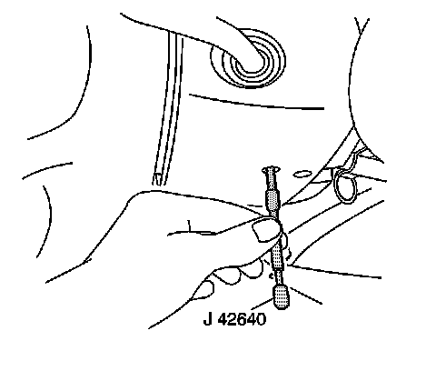
1. Install J 42640 to the steering column. Refer to Lower Intermediate Steering Shaft Replacement (Lower Intermediate Steering Shaft Replacement) .
2. Disconnect the positive and negative battery cables from the battery. Refer to Battery Negative Cable Disconnection and Connection (LHD) (Service and Repair)Battery Negative Cable Disconnection and Connection (RHD) (Service and Repair) and Battery Positive Cable Replacement (LY7 (LHD)) (Service and Repair)Battery Positive Cable Replacement (LY7 (RHD)) (Service and Repair)Battery Positive Cable Replacement (LH2 (LHD)) (Service and Repair)Battery Positive Cable Replacement (LH2 (RHD)) (Service and Repair) .
3. Remove the cross vehicle brace. Refer to Cross Vehicle Brace Replacement (Cross Vehicle Brace Replacement) .
4. Remove the fuel injector sight shield. Refer to Fuel Injector Sight Shield Replacement (Service and Repair) .
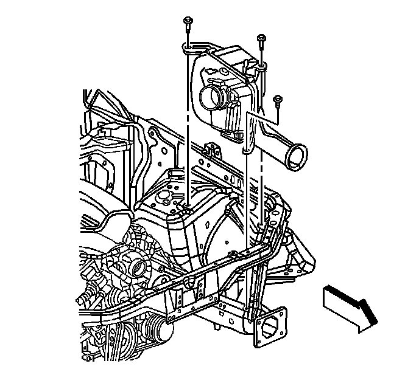
5. Remove the air cleaner assembly. Refer to Air Cleaner Assembly Replacement (Service and Repair) .
6. Disconnect the surge tank inlet hose and position the hose to the engine.
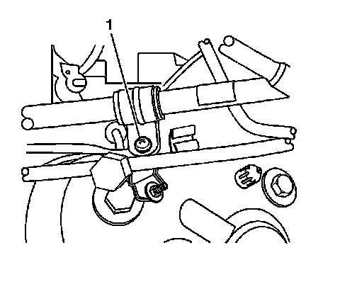
7. Evacuate the air conditioning system. Refer to Refrigerant Recovery and Recharging (Refrigerant Recovery and Recharging) .
8. Disconnect the air conditioning suction hose fitting at the top of the left shock tower. Refer to Suction Hose Replacement (LY7 w/o C57) (Suction Hose Replacement (w/o C57))Suction Hose Replacement (LH2 w/o C57) (Suction Hose Replacement (w/o C57)) .
9. Remove the suction hose from the retaining feature (1). Position the line to the engine.
10. Disconnect the air conditioning liquid line from the condenser. Refer to Liquid Line Replacement (w/C57) (Liquid Line Replacement (w/C57)) .
11. Remove the air conditioning liquid line from the retaining feature on the fan shroud.
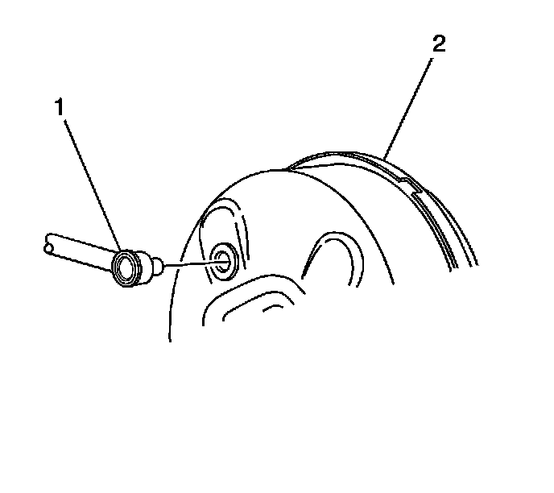
12. Disconnect the brake booster vacuum line (1) from the brake booster (2). Position the brake booster line to the engine.
13. Disconnect the electrical connector on the brake fluid level switch from the master cylinder.
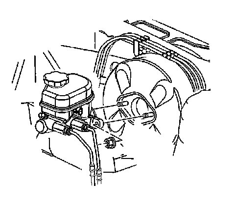
14. Remove the master cylinder mounting nuts.
15. Position the master cylinder to the engine. Hold the master cylinder in position by using mechanics wire. Do not disconnect the brake lines from the master cylinder.
16. Relieve the fuel system pressure. Refer to Fuel Pressure Relief (With CH 48027) (Fuel Pressure Relief (With CH 48027))Fuel Pressure Relief (Without CH 48027) (Fuel Pressure Relief (Without CH 48027)) .

17. Remove the fuel line retainer (1) from the vehicle. The retainer is located on the bracket attached to the heater lines on the front of the dash.
18. Disconnect the engine wiring harness connector C102 at the front of the dash. Refer to Harness Routing Views (LHD) (Harness Routing Views (LHD))Harness Routing Views (RHD) (Harness Routing Views (RHD)) .
19. Disconnect the underhood fuse block connector C5 located between the right shock tower and the cam cover. Refer to Harness Routing Views (LHD) (Harness Routing Views (LHD))Harness Routing Views (RHD) (Harness Routing Views (RHD)) .
20. Remove the underhood electrical center cover.
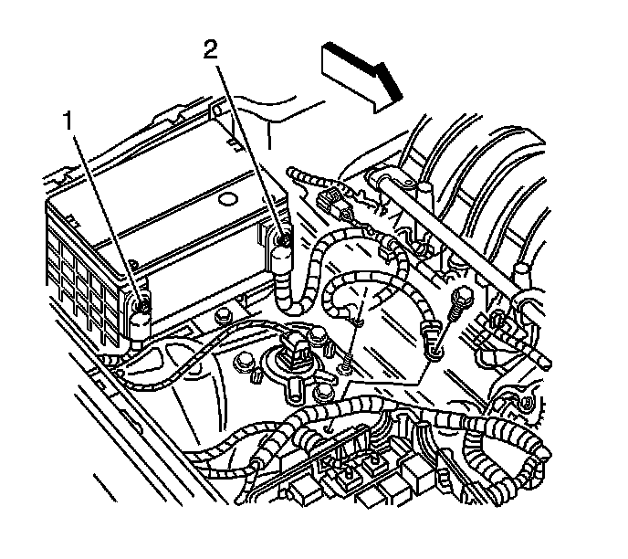
21. Remove the negative battery cable (2) bolt from the right shock tower. Remove the cable retainer from the stud on the right shock tower and position the cable to the engine.
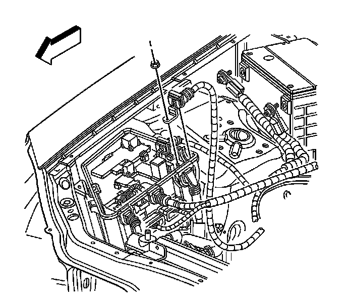
22. Remove the positive battery cable nut from inside the underhood electrical center. Remove the cable from the electrical center and position the cable to the engine.
23. Disconnect the chassis electrical connector at the top of the right shock tower. Position the wire to the engine.
24. For the 5L50-E transmission only, disconnect the electrical connector for the transmission control module and position the wiring harness to the engine. Refer to Transmission Control Module Replacement (5L40-E/5L50-E - Automatic Transmission) .
25. Disconnect the engine wiring harness C5 connector from the inside of the underhood electrical center. Refer to Underhood Electrical Center or Junction Block Replacement (Service and Repair) .
26. Disconnect the electrical connector C113 at the right frame rail. Refer to Underhood Electrical Center or Junction Block Replacement (Service and Repair) .
27. Remove the engine cooling fans. Refer to Engine Cooling Fan Replacement (LH2 - Heavy Duty Cooling) (Service and Repair).
28. Raise and support the vehicle. Refer to Lifting and Jacking the Vehicle (Service and Repair) .
29. Remove the front tire and wheel assemblies. Refer to Tire and Wheel Removal and Installation (Service and Repair) .

30. Remove the right and left wheelhouse splash shields. Refer to Wheelhouse Splash Shield Replacement (R1T, R1X) (Service and Repair) .
31. Remove the right and left wheelhouse liners. Refer to Wheelhouse Panel Replacement - Right Side (Service and Repair) and Wheelhouse Panel Replacement - Left Side (Service and Repair) .
32. Working through the right wheelhouse, remove the brace that secures the windshield washer reservoir to the front frame.
33. Place a suitable drain pan under the vehicle.
34. Working through the left wheelhouse, disconnect the transmission oil cooler lines located near the air conditioning compressor.
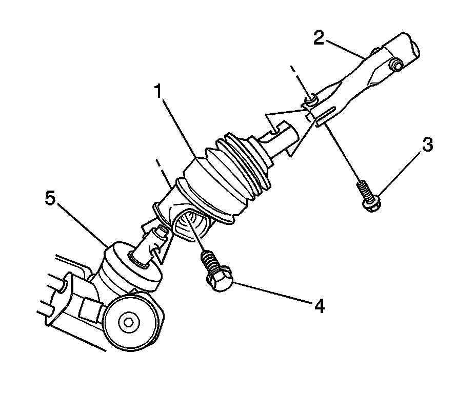
35. Remove the bolt (3) that secures the center intermediate shaft to the lower intermediate shaft.
36. Separate the 2 shafts.
37. Drain the cooling system. Refer to Cooling System Draining and Filling (GE 47716 -Vac N Fill Coolant Refill Tool) (Service and Repair)Cooling System Draining and Filling (Static Fill) (Service and Repair) .

38. Remove the bolt securing the power steering cooler lines to the radiator assembly.
39. Lower the vehicle.
40. Remove the radiator, condenser, and transmission oil cooler as an assembly. Refer to Radiator Replacement (LH2 - Heavy Duty Cooling) (Service and Repair)Radiator Replacement (LH2 - Standard Cooling) (Service and Repair)Radiator Replacement (LY7 - Standard Cooling) (Service and Repair) and Condenser Replacement (Heavy Duty Cooling) (Condenser Replacement (Heavy Duty Cooling))Condenser Replacement (Standard Cooling) (Condenser Replacement (Standard Cooling)) .
41. Raise the vehicle.
42. Remove the bolts from the mounting bracket on the power steering oil cooler. Refer to Power Steering Fluid Cooler Replacement (With V92) (Power Steering Fluid Cooler Replacement (With V92))Power Steering Fluid Cooler Replacement (Without V92) (Power Steering Fluid Cooler Replacement (Without V92)) . Position the oil cooler to the engine. Secure the cooler to the engine with mechanics wire.
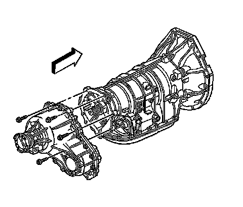
43. Remove the transfer case, if equipped. Refer to Transfer Case Assembly Replacement (Transfer Case Assembly Replacement) .
44. Remove the transmission assembly. Refer to Transmission Replacement (MX0) (Removal and Replacement)Transmission Replacement (MX7) (Removal and Replacement) or Transmission Replacement (LY7 - Gas, 6 Cylinder, 3.6L, SFI, V6) (Removal and Replacement)Transmission Replacement (LH2 - Gas, 8 Cylinder, 4.6L, SFI, V8, DOHC, HO) (Removal and Replacement) .
45. Remove the brake bundle clips from the right and left frame rails. Do not remove the clips from the brake lines.
46. Disconnect the fuel line from the fuel filter. Refer to Fuel Hose/Pipes Replacement - Chassis (Service and Repair) .
47. Disconnect the evaporative emission (EVAP) hose connection at the rear of the fuel filter. Refer to Evaporative Emission Hoses/Pipes Replacement - Chassis/Canister (Service and Repair) .
48. Disconnect the rear brake lines from the bracket above the rear axle assembly. Refer to Brake Pipe Replacement (Brake Pipe Replacement) .
49. Remove the fuel and brake line bundle retainers from the frame rail along the length of the vehicle. Do not remove the retainers from the lines. Refer to Fuel Hose/Pipes Replacement - Chassis (Service and Repair) .
50. Remove the fuel filter bracket to provide a removal path for the fuel and brake line bundle assembly.
51. Remove the fuel and brake line bundle bracket from the right side wheelhouse.
52. Lower the vehicle.
53. Disconnect the outlet hose from the heater outlet pipe at the right frame rail. Position the hose to the engine.
54. Disconnect the inlet hose from the water housing and position the hose to the vehicle.
55. If the vehicle is equipped with Magnaride, disconnect the electrical connectors from the top of the right and left shock modules.
56. Remove the upper mounting bolts from the right and left shock module.
57. Secure the shock modules to the front frame with mechanics wire to avoid stretching the front brake hoses.
58. Raise the vehicle enough to place a suitable lift table under the engine, front frame, and front suspension assembly.
Caution: To avoid any vehicle damage, serious personal injury or death when major components are removed from the vehicle and the vehicle is supported by a hoist, support the vehicle with jack stands at the opposite end from which the components are being removed and strap the vehicle to the hoist.
59. Support the rear of the vehicle with suitable jack stands.
60. Raise the lift table and/or lower the vehicle to preload the weight of the engine, front frame, and front suspension assembly.
61. Remove the front frame bolts.
62. With the aid of an assistant, lower the table and/or raise the vehicle to remove the engine, front frame, fuel/brake bundle, and front suspension assembly from the vehicle.
63. Ensure that all the hoses, wires, pipes, and shock modules clear the vehicle during the removal process.
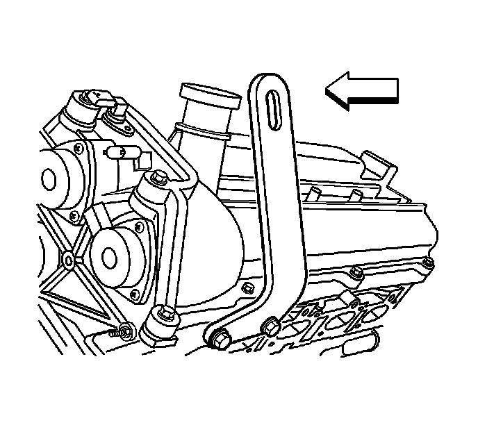
64. Install J 28467-86 to the left cylinder head. Refer to Engine Support Fixture (Engine Support Fixture) .
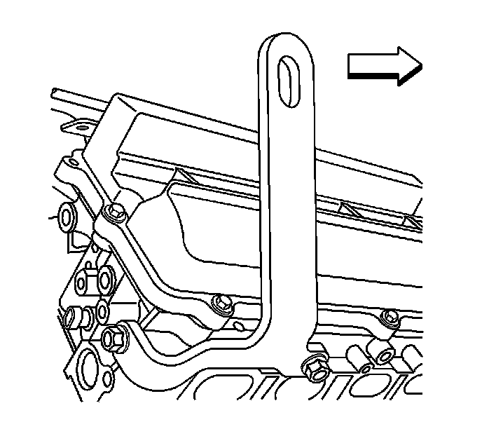
65. Install J 28467-87 to the right cylinder head. Refer to Engine Support Fixture (Engine Support Fixture) .
66. Using a suitable engine lift, remove the engine from the front frame assembly.
Installation Procedure
1. Install the engine to the front frame.
2. Ensure that all the hoses, wires, pipes, and shock modules are positioned out of the way to avoid contact during engine installation.
3. With the aid of an assistant, raise the table and/or lower the vehicle to install the engine, front frame, fuel/brake bundle, and front suspension.
Notice: Refer to Fastener Notice (Fastener Notice) .
4. Install the frame bolts.
Tighten the frame bolts to 191 N.m (141 lb ft).
5. Install the right and left upper shock modules bolts.
Tighten the bolts to 112 N.m (83 lb ft).
6. If the vehicle is equipped with Magnaride, connect the shock module electrical connectors.
7. Connect the heater inlet hose to the water housing.
8. Connect the heater outlet hose to the outlet pipe.
9. Raise the vehicle.
10. Install the fuel and brake line bundle bracket to the right side wheelhouse.
Tighten the bracket bolt to 9 N.m (80 lb in).
11. Install the fuel filter bracket bolt.
Tighten the bracket bolt to 9 N.m (80 lb in).
12. Install the fuel and brake line to the bundle brackets, the length of the vehicle.
13. Install the rear brake line to the bracket bolt above the rear axle assembly.
Tighten the bracket bolt to 9 N.m (80 lb in).
14. Connect the EVAP hose to the rear of the fuel filter.
15. Connect the fuel line to the fuel filter.
16. Install the brake lines to the bundle clips on the right and left frame rails.
17. Install the transmission assembly. Refer to Transmission Replacement (MX0) (Removal and Replacement)Transmission Replacement (MX7) (Removal and Replacement) or Transmission Replacement (LY7 - Gas, 6 Cylinder, 3.6L, SFI, V6) (Removal and Replacement)Transmission Replacement (LH2 - Gas, 8 Cylinder, 4.6L, SFI, V8, DOHC, HO) (Removal and Replacement) .
18. Install the transfer case, if equipped. Refer to Transfer Case Assembly Replacement (Transfer Case Assembly Replacement) .
19. Install the powers steering oil cooler to the mounting bracket. Refer to Power Steering Fluid Cooler Replacement (With V92) (Power Steering Fluid Cooler Replacement (With V92))Power Steering Fluid Cooler Replacement (Without V92) (Power Steering Fluid Cooler Replacement (Without V92)) .
20. Lower the vehicle.
21. Install the radiator, condenser, and transmission oil cooler as an assembly. Refer to Radiator Replacement (LH2 - Heavy Duty Cooling) (Service and Repair)Radiator Replacement (LH2 - Standard Cooling) (Service and Repair)Radiator Replacement (LY7 - Standard Cooling) (Service and Repair) and Condenser Replacement (Heavy Duty Cooling) (Condenser Replacement (Heavy Duty Cooling))Condenser Replacement (Standard Cooling) (Condenser Replacement (Standard Cooling)) .
22. Raise the vehicle.
23. Install the bolt that secures the power steering to the radiator.
Tighten the bolt to 9 N.m (80 lb in).
24. Connect the center intermediate shaft to the lower intermediate shaft.
25. Install the bolt (3) that secures the 2 shafts.
Tighten the bolt to 30 N.m (23 lb ft).
26. Working through the left wheelhouse, connect the transmission oil cooler lines near the air conditioning compressor.
27. Working through the right hand wheelhouse, install the bolt which secures the washer fluid reservoir to the front frame brace.
Tighten the bolt to 6 N.m (53 lb in).
28. Install the right and left front wheelhouse liners. Refer to Wheelhouse Panel Replacement - Right Side (Service and Repair) and Wheelhouse Panel Replacement - Left Side (Service and Repair) .
29. Install the right and left wheelhouse splash shields. Refer to Wheelhouse Splash Shield Replacement (R1T, R1X) (Service and Repair) .
30. Install the right and left front tire assemblies. Refer to Tire and Wheel Removal and Installation (Service and Repair) .
31. Lower the vehicle.
32. Install the cooling fan. Refer to Engine Cooling Fan Replacement (LH2 - Heavy Duty Cooling) (Service and Repair.
33. Connect the electrical connector C113 at the right hand frame rail. Refer to Underhood Electrical Center or Junction Block Replacement (Service and Repair) .
34. Connect the electrical connector C5 to the underhood bussed electrical center. Refer to Underhood Electrical Center or Junction Block Replacement (Service and Repair) .
35. For the 5L50-E transmission only, connect the transmission control module. Refer to Transmission Control Module Replacement (5L40-E/5L50-E - Automatic Transmission) .
36. Connect the chassis electrical connector located at the top of the right hand shock tower.
37. Install the positive battery cable to the underhood bussed electrical center.
Tighten the battery cable nut to 15 N.m (11 lb ft).
38. Install the negative battery cable retainer and bolt to the right hand shock tower.
Tighten the retainer bolt to 36 N.m (27 lb ft).
39. Install the underhood electrical center cover.
40. Connect the underhood fuse block connector C5.
41. Connect the front of the dash electrical connector C102. Refer to Harness Routing Views (LHD) (Harness Routing Views (LHD))Harness Routing Views (RHD) (Harness Routing Views (RHD)) .
42. Install the fuel line retainer located on the bracket attached to the heater lines on the front of the dash.
43. Install the brake master cylinder.
Tighten the retaining nuts to 25 N.m (18 lb ft).
44. Connect the brake fluid level switch.
45. Connect the brake booster vacuum line to the brake booster.
46. Install the air conditioning liquid line to the condenser. Refer to Liquid Line Replacement (w/C57) (Liquid Line Replacement (w/C57)) .
47. Install the air conditioning suction hose located at the top of the left hand shock tower (1). Refer to Suction Hose Replacement (LY7 w/o C57) (Suction Hose Replacement (w/o C57))Suction Hose Replacement (LH2 w/o C57) (Suction Hose Replacement (w/o C57)) .
48. Install the air conditioning liquid and suction lines to the retaining feature on the fan shroud.
49. Connect the coolant surge tank hose to the radiator.
50. Install the air cleaner assembly. Refer to Air Cleaner Assembly Replacement (Service and Repair) .
51. Install the fuel injector sight shield. Refer to Fuel Injector Sight Shield Replacement (Service and Repair) .
52. Install the cross vehicle brace. Refer to Cross Vehicle Brace Replacement (Cross Vehicle Brace Replacement) .
53. Install the positive battery cable. Refer to Battery Positive Cable Replacement (LY7 (LHD)) (Service and Repair)Battery Positive Cable Replacement (LY7 (RHD)) (Service and Repair)Battery Positive Cable Replacement (LH2 (LHD)) (Service and Repair)Battery Positive Cable Replacement (LH2 (RHD)) (Service and Repair) .
54. Install the negative battery cable. Refer to Battery Negative Cable Disconnection and Connection (LHD) (Service and Repair)Battery Negative Cable Disconnection and Connection (RHD) (Service and Repair) .
55. Remove J 42640 . Refer to Lower Intermediate Steering Shaft Replacement (Lower Intermediate Steering Shaft Replacement) .
56. Fill the engine with engine oil. Refer to Engine Oil and Oil Filter Replacement (Service and Repair) .
57. Fill the cooling system. Refer to Refrigerant Recovery and Recharging (Refrigerant Recovery and Recharging) .
58. Recharge the air conditioning system. Refer to Refrigerant Recovery and Recharging (Refrigerant Recovery and Recharging) .
59. Bleed the brake system. Refer to Hydraulic Brake System Bleeding (Pressure) (Service and Repair)Hydraulic Brake System Bleeding (Manual) (Service and Repair) .